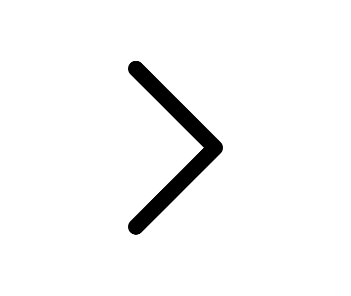
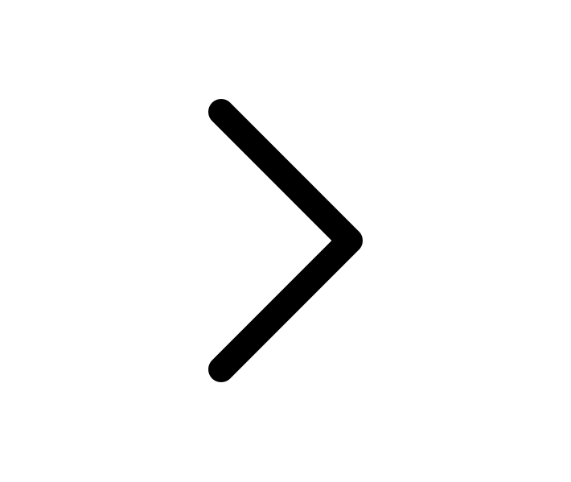

Mô hình MUN
Mô phỏng Liên hợp quốc (Model United Nations) là một hoạt động học thuật phổ biến,
mang tầm quốc tế nhằm khuyến khích học sinh tìm hiểu thêm về quan hệ quốc tế, ngoại giao
cũng như cách thức hoạt động của Liên hợp quốc. Người tham dự có cơ hội thử sức với vai
trò Đại biểu từ nhiều quốc gia khác nhau để tranh luận về những vấn đề đang diễn ra trên
thế giới, cùng nhau hợp tác để đưa ra những giải pháp thiết thực để giải quyết những vấn đề
ấy.
Lý do thành lập
Câu lạc bộ Mô phỏng Liên hợp quốc tại trường Phổ Thông Năng Khiếu sẽ góp phần tạo nên
một cộng đồng MUN trong khuôn khổ trường học cùng sự phát triển của mô hình MUN hiện nay.
Học sinh Phổ Thông Năng Khiếu có niềm đam mê với hoạt động Mô phỏng Liên hợp quốc thông qua câu lạc bộ được kết nối với nhau. Qua đó, các thành viên có thể cùng nhau đi giao lưu học hỏi tại các hoạt động MUN khác được tổ chức.
Mục tiêu của câu lạc bộ
Tạo ra một sân chơi kết nối các bạn học sinh trong và ngoài trường Phổ Thông Năng
Khiếu có niềm đam mê với hình thức Mô phỏng Liên Hợp Quốc.
Tuyên truyền một hoạt động học thuật để học sinh được tiếp cận ở nhiều khía cạnh vấn đề trên toàn cầu.
Trau dồi những kỹ năng mềm như tìm kiếm thông tin, tư duy phản biện, làm việc nhóm, phát biểu trước công chúng.